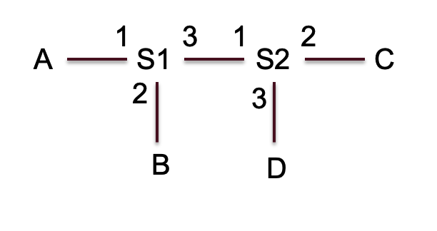

第 4 章 作业 · 网络层
题目 1混合协议 Hybrid-CSMA/ALOHA 的性能趋势
题目
考虑一种混合协议 Hybrid-CSMA/ALOHA，其工作机制如下：结点在发送前先侦听信道；若信道空闲，则立即发送；若信道忙，则以概率 p 在下一个时隙重试，以概率 (1 − p) 等待两个时隙后再试。请基于你对 ALOHA 与 CSMA 原理的理解，分析此混合协议在高负载下的信道利用率和时延性能趋势。
参考答案
（1）信道利用率
当信道忙时，结点将进入概率重试阶段。这种概率重试与时隙 ALOHA 的原理相似。如果多个结点在信道忙结束后同时进入概率重试，且选择了立即重试（概率 p），则会发生碰撞。由于缺乏 CSMA/CD 的快速碰撞检测和终止机制，碰撞会导致整个包传输时间 T 的浪费。若 p 值设计不当（过大），会导致大量竞争和碰撞，信道利用率下降，可能跌至接近或低于纯 ALOHA 的水平。若 p 值设计合理（较小），可以平滑竞争，提高效率。
（2）平均时延
在高负载下，结点发送前侦听到忙碌的概率高，进入退避等待的时间增加。退避机制（p 概率等待 1 时隙，(1 − p) 概率等待 2 时隙）引入了额外的等待时延。若 p 值导致高碰撞率，则重传次数增加，时延增大。
题目 2CSMA/CD 的工作过程与最小帧长
题目
以太网使用 CSMA/CD 协议来控制访问。
- 简述 CSMA/CD 的基本工作过程，并说明若两个主机同时开始发送帧，描述冲突检测和指数退避的过程。
- 假设信号在链路上传播时延为 τ，帧传输时间为 Tf，请说明帧传输时间 Tf 与链路传播时延 τ 需要满足的关系，并说明原因。
参考答案
（1）CSMA/CD 的基本工作过程
其基本工作过程可以概括为以下步骤：
- 载波侦听：主机在发送数据前，首先侦听（监听）信道。如果信道空闲：主机可以立即发送数据帧。如果信道忙碌：主机必须等待，直到检测到信道空闲。
- 发送与冲突检测：主机在发送数据的同时，持续监听信道以检测是否有冲突发生。如果成功发送：主机发送完整个帧，认为发送成功。如果检测到冲突：主机立即停止发送，并发送一个特殊的「阻塞信号（Jam Signal）」，确保所有其他主机都能检测到冲突。
- 冲突处理：在发送阻塞信号后，冲突涉及的主机进入指数退避阶段，以决定何时进行下一次重传尝试。
冲突检测和指数退避的过程：
- 冲突检测：
- （i）冲突发生：当主机 A 的信号与主机 B 的信号在共享介质上相遇时，信号会混合，导致接收方无法正确解码，这就是冲突。
- （ii）检测机制：每个发送主机在发送帧的同时，会监测其接收信号的强度和波形。如果接收到的信号强度超过自身发送信号强度的某一阈值（或者信号波形发生畸变），则认为发生了冲突。
- （iii）发送阻塞信号（Jam Signal）：一旦主机检测到冲突，它不会立即停止，而是会发送一个短暂的 32 或 48 比特的阻塞信号。这个信号的作用是：强化冲突，确保所有正在侦听的主机都能检测到冲突；确保任何正在接收被冲突帧的主机能够丢弃该帧。
- 二进制指数退避：冲突发生后，所有参与冲突的主机必须暂停发送，并在等待一段随机时间后重试。等待时间由指数退避算法确定：
- 时隙：等待时间的基本单位是时隙（在标准以太网中，通常是 512 比特时间，即 2τ）。
- 重传次数 k：主机已经尝试重传的次数（k=1,2,3,…,10 等）。
- 退避范围 K：主机计算一个退避范围 K=min(2k−1,1023)，并从 {0,..,K} 中随机选择一个数 r。随着 k 增加，随机范围呈指数增长，从而分散重传尝试。
- 退避时间：主机等待的退避时间 T = r × 时隙时间。
- 重试：主机等待 T 时间结束后，重新执行 CSMA/CD 过程。
- 限制：如果重传次数过多（如达到 16 次），则认为链路故障，放弃发送。
（2）帧传输时间与链路传播时延的关系
要求：Tf ≥ 2τ
最小帧长限制的原因：CSMA/CD 协议的核心是：主机必须在完成整个帧的发送之前检测到冲突。为了保证这一点，帧的传输时间必须满足 Tf ≥ 2τ。让我们考虑最坏情况的冲突情景：
- 时刻 t0：主机 A（链路一端）开始发送帧。
- 时刻 t0 + τ − ε：在 A 的信号到达 B 之前的一瞬间，主机 B（链路另一端）侦听到信道空闲（因为 A 的信号未到），因此 B 也开始发送帧。此时，冲突发生。
- 最关键的是，A 必须在 t0 + 2τ 之前仍处于发送状态，才能检测到 B 发送的冲突信号。如果帧传输时间不符合要求，主机 A 在发送结束时都没有检测到冲突，它会错误地认为该帧已发送成功。尽管发送主机 A 认为成功了，但由于冲突，该帧的数据实际上已损坏。接收方无法正确接收该帧，但发送方却不会尝试重传。
题目 3CSMA/CA 与 CSMA/CD 的差异
题目
与 CSMA/CD 不同，WiFi（IEEE 802.11）使用 CSMA/CA 协议。
- 简述 CSMA/CA 的工作流程，并指出与 CSMA/CD 的主要差异。
- 为什么 WiFi 不能使用 CSMA/CD？
- 假设节点使用「DIFS + 随机退避 + RTS/CTS + 数据 + ACK」机制，请说明该序列中各帧的作用。
参考答案
（1）CSMA/CA 的工作流程及与 CSMA/CD 的主要差异
CSMA/CA 的基本工作流程如下：
- （i）载波侦听：主机（节点）在发送前必须侦听信道。如果信道持续空闲达到一个固定的时间间隔 DIFS，则进入退避流程。
- （ii）随机退避：节点在侦听到信道空闲后，仍会等待一个随机的退避时间。这个随机退避时间用于进一步分散多个同时准备发送的节点，从而降低冲突的概率。
- （iii）可选的握手（RTS/CTS）：为了更好地避免冲突，特别是隐藏节点问题，发送节点可以先发送一个短小的 RTS（Request To Send）帧。接收节点收到 RTS 后，如果准备好接收，会回复一个 CTS（Clear To Send）帧。只有在收到 CTS 帧后，发送节点才开始发送数据帧。
- （iv）数据传输与确认（ACK）：成功接收到数据的接收节点必须在短时间间隔 SIFS 后，回复一个确认 ACK 帧。发送方收到 ACK 帧，才认为数据传输成功。
- （vi）超时与重传：如果发送方在预定时间内没有收到 ACK 帧（可能是数据帧或 ACK 帧丢失/损坏，通常是冲突造成的），则认为传输失败，将进入退避并重试。
CSMA/CA 与 CSMA/CD 的主要差异：
| 特征 | CSMA/CA（WiFi） | CSMA/CD（以太网） |
|---|---|---|
| 冲突处理方式 | 避免（Avoidance）：在发送前使用随机退避和预约（RTS/CTS）来降低冲突概率。 | 检测（Detection）：发送时同步检测冲突，发现冲突立即停止发送。 |
| 检测手段 | 无冲突检测机制：不要求发送方在发送时监测信号。 | 有冲突检测机制：发送方在发送时必须监测信号。 |
| 确认机制 | 强制使用 ACK：必须通过 ACK 帧来判断传输是否成功。 | 无 ACK 机制：传输成功与否由底层硬件保证。 |
| 适用介质 | 无线介质（WiFi） | 有线介质（以太网） |
（2）WiFi 不能使用 CSMA/CD 的原因
WiFi 无法使用 CSMA/CD 协议的核心原因在于无线介质的特性，特别是冲突检测的困难：
- （i）无法进行可靠的冲突检测。在有线以太网中，主机发送和接收信号通过两条独立的线或不同的频率，发送方可以通过比较自己的发送信号和接收到的信号来轻松检测冲突。但在 WiFi 中：发送信号强度远大于接收信号强度：无线电信号在发送过程中会迅速衰减，而发送方自身的发射功率通常远远大于远端传来的信号强度。发送方在发送时，它几乎完全被自己强大的发射信号所淹没（被称为近远效应或自我干扰）。因此，发送中的 WiFi 节点很难可靠地检测到是否有来自远端、同时发生的、微弱的冲突信号。
- （ii）隐藏节点问题。CSMA/CD 的有效性依赖于所有节点都能听到彼此的信号（即都能可靠地侦听信道）。但在 WiFi 中，由于信号衰减、障碍物和距离，存在隐藏节点问题：由于这两个根本问题，CSMA/CD 在无线网络中是不可靠的。因此，WiFi 必须采用 CSMA/CA 这种预防为主的策略。
（3）DIFS + 随机退避 + RTS/CTS + 数据 + ACK 序列中各帧的作用
在 DIFS + 随机退避 + RTS/CTS + 数据 + ACK 序列中，各帧的作用如下：
| 帧类型 | 作用（目标） | 谁发送/谁接收 | 关键信息 |
|---|---|---|---|
| DIFS/退避 | 载波侦听与冲突避免：确保信道空闲，并用随机退避进一步分散发送时间。 | 所有节点侦听/执行 | 持续侦听信道状态 |
| RTS（Request To Send） | 请求发送，预约信道：向接收方申请发送，并向所有听到的节点通告传输即将开始。 | 发送节点 → 接收节点 | 包含传输持续时间（Duration） |
| CTS（Clear To Send） | 允许发送，抑制节点：接收方授权发送方发送数据，并命令所有听到的节点（包括潜在的隐藏节点）在指定时间内保持静默。 | 接收节点 → 发送节点 | 包含传输持续时间（Duration） |
| DATA | 传输数据：实际的有效载荷传输。 | 发送节点 → 接收节点 | 实际数据 |
| ACK（Acknowledgment） | 确认成功：通知发送方数据已正确接收。 | 接收节点 → 发送节点 | 确认成功 |
题目 4交换式以太网的转发行为与 MAC 地址表
题目
下图所示网络中共有四台主机（A、B、C、D）和两台交换机（S1、S2），端口号已标明。它们的连接如下（每台主机和交换机端口都是点对点全双工连接）：

已知：所有设备的初始 MAC 地址表均为空。交换机采用自学习和基于目的 MAC 地址的转发策略。若目标 MAC 未知，交换机执行泛洪。
请回答下列问题：
- 与早期共享式以太网相比，交换以太网在性能和冲突控制上有哪些改进？
- 假设以下帧依次被发送（顺序如下）：
- 步骤 1：主机 A 发送帧给主机 B。
- 步骤 2：主机 B 回复帧给主机 A。
- 步骤 3：主机 C 发送帧给主机 D。
请分别说明：
- 各交换机（S1、S2）在处理该帧时的转发行为和 MAC 地址表更新行为（转发到哪些端口？泛洪还是定向？）
- 各交换机在三个步骤之后的 MAC 地址表内容（条目）。
参考答案
（1）交换式以太网的改进
| 特征 | 早期共享式以太网（集线器 Hub） | 交换式以太网（交换机 Switch） |
|---|---|---|
| 冲突域 | 整个网络是一个单一冲突域 | 每个交换机端口是一个独立的冲突域 |
| 冲突控制 | 必须使用 CSMA/CD 协议来处理冲突，随着主机增加，冲突概率增加，性能降低 | 本质上消除了冲突 |
| 带宽 | 总带宽被所有主机共享 | 提供了独占带宽 |
| 性能 | 吞吐量差，扩展性受限 | 高吞吐量，支持并行转发 |
（2）三个步骤的转发行为与最终的 MAC 地址表
各交换机在处理各帧时的转发行为和 MAC 地址表更新行为：
| 步骤 | 交换机 S1 | 交换机 S2 |
|---|---|---|
| A → B | 泛洪到端口 2 和 3，添加（A，1）到表中 | 泛洪到端口 2 和 3，添加（A，1）到表中 |
| B → A | 因为 A 在表中，定向转发给端口 1，添加（B，2）到表中 | 帧不经过，无需转发和更新 |
| C → D | 泛洪到端口 1 和 2，添加（C，3）到表中 | 泛洪到端口 3 和 1，添加（C，2）到表中 |
三个步骤之后交换机 S1 的 MAC 地址表：
| 主机 | 端口 |
|---|---|
| A | 1 |
| B | 2 |
| C | 3 |
三个步骤之后交换机 S2 的 MAC 地址表：
| 主机 | 端口 |
|---|---|
| A | 1 |
| C | 2 |